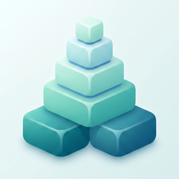

Daily Habit Tracker: Streaks
Daily Habit Tracker: Streaks is a simple and easy-to-use app for building better daily routines and tracking your habits over time.
Add habits you want to practice regularly, check them off each day, track your streaks, view your progress, and review your habit history in a clean calendar view.
You can use the app for routines such as drinking water, exercising, reading, studying, meditating, walking, sleeping early, or any small habit you want to build.
This app is useful for anyone who wants to stay consistent, build healthier routines, improve productivity, or keep track of daily goals without a complicated system.
Features
- Create and track daily habits
- Check off habits for today
- Track current streaks
- View today's progress
- View weekly progress
- View completion stats for each habit
- Review habit history with a calendar view
- Edit past completion dates
- View recent progress over the last 14 days
- Set daily reminders for habits
- Edit habit names and emojis
- Delete habits when no longer needed
- Create up to 3 habits for free
- Create unlimited habits with Pro
- Remove ads with Pro
- Simple and clean design
Frequently Asked Questions
-
Q: What does this app do?
A: Daily Habit Tracker: Streaks helps you create daily habits, check them off, track streaks, and review your progress over time.
-
Q: Who is this app for?
A: This app is designed for anyone who wants to build better routines, stay consistent, track daily goals, or improve personal habits.
-
Q: What kinds of habits can I track?
A: You can track any habit you want, such as drinking water, exercising, reading, studying, meditating, walking, stretching, journaling, or sleeping early.
-
Q: How do I complete a habit?
A: Tap the check button for a habit to mark it as completed for today.
-
Q: Can I edit past dates?
A: Yes. You can open a habit detail screen and tap dates in the calendar history to add or remove completions for past days.
-
Q: Can I track streaks?
A: Yes. The app shows your current streak for each habit based on your completed days.
-
Q: Can I see weekly progress?
A: Yes. The home screen shows your weekly progress based on the habits completed so far this week.
-
Q: Can I set reminders?
A: Yes. You can set a daily reminder for each habit. Reminders are sent as local notifications on your device.
-
Q: How many habits can I create for free?
A: Free users can create up to 3 habits. Pro unlocks unlimited habit creation.
-
Q: What does Pro include?
A: Pro includes unlimited habits and an ad-free experience.
-
Q: What happens if my Pro subscription ends?
A: Your existing habits are not deleted. You can continue to view and use your saved habits, but creating additional habits beyond the free limit requires Pro.
-
Q: Are my habits deleted if I cancel Pro?
A: No. Your habit data remains stored on your device. Resubscribing to Pro restores access to unlimited habit creation and removes ads again.
-
Q: Where is my data stored?
A: Your habits, completion history, and reminder settings are stored locally on your device. The app does not require an account to use the main features.
-
Q: Do I need an internet connection?
A: Habit tracking and saved data can be used offline. An internet connection may be required to load ads or complete in-app purchases.
-
Q: Is this a medical or health treatment app?
A: No. This app is a simple habit tracking tool. It does not provide medical advice, diagnosis, treatment, or professional health guidance.
📩 Contact
If you have any questions or encounter issues, feel free to contact us:
← Back to Support Center